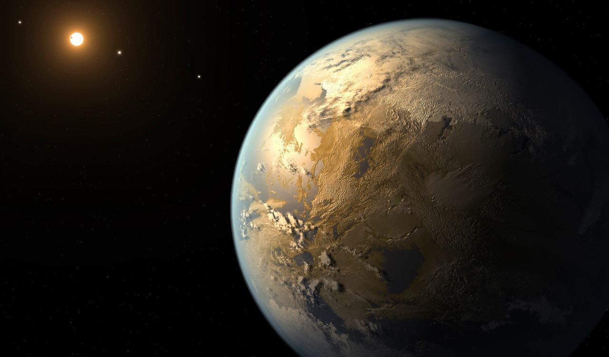
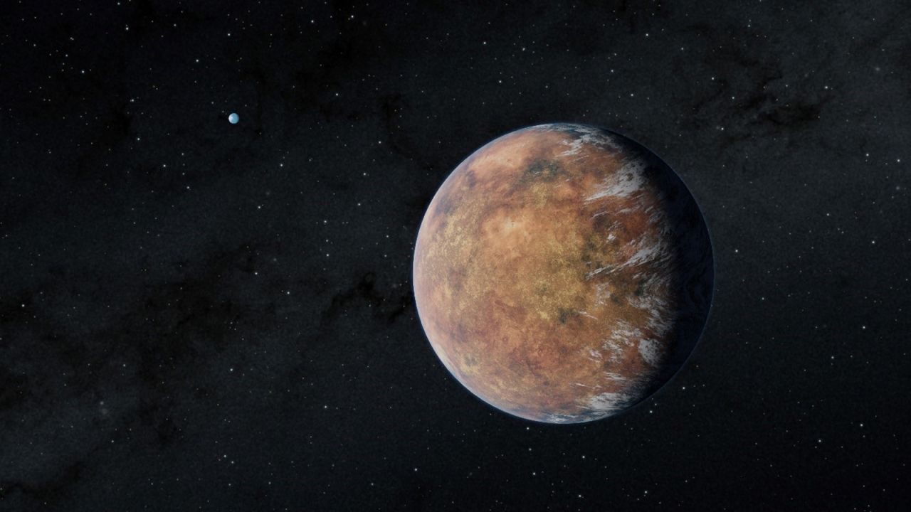
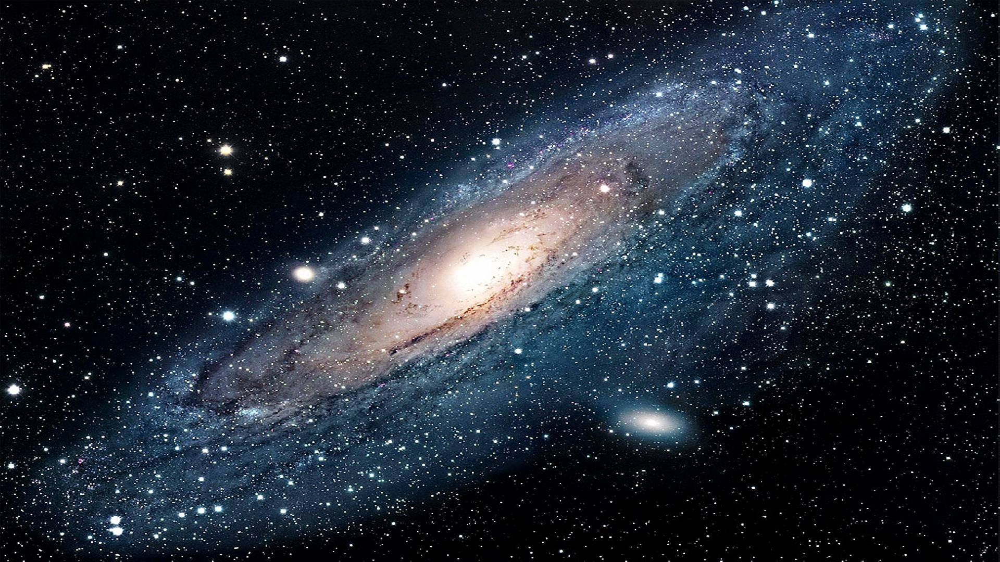

KEPLER-186f

Kepler-186f is located in the constellation Cygnus, about 500 light-years away from Earth. It's
an
Earth-size exoplanet that orbits its star in the habitable zone.
TRAPPIST-1e

TRAPPIST-1e is located in the constellation Aquarius, about 40 light-years from Earth. It's an
exoplanet that is about the same size as Earth and is located in the habitable zone of its star.
LHS 1140b

LHS 1140b is located in the constellation Cetus, about 39 light-years from Earth. It's an
exoplanet
that is about 1.4 times the size of Earth and is located in the habitable zone of its star.

The Milky Way Galaxy:
Milky Way is a barred spiral galaxy that
contains our Solar System and is part of the
Local Group of galaxies.
It is estimated to contain 100 - 400 billion stars, as well as an estimated 100 billion planets,
numerous asteroids, and other celestial bodies. The Milky Way has a diameter of
about 100,000
light-years and is estimated to be about 13.51 billion years old. It is located in the
constellation
of Sagittarius and its center, which is thought to contain a supermassive black hole, is
approximately 26,000 light-years from Earth. The Milky Way is still actively forming new stars,
with
the majority of star formation occurring in the spiral arms.
See more

Time in Space
In space, time is measured the same way it is on Earth, but it can be affected by gravity and
velocity. The closer an object is to a massive body like a planet, the stronger its
gravitational pull, which can cause time to appear to slow down.
Life on Earth
Life on Earth is a diverse collection of living organisms, including plants, animals, fungi, and
microorganisms. It has evolved over millions of years in response to a changing environment and
has adapted to a wide range of habitats, from the deepest oceans to the highest mountains.
Our Star
The sun is a type of star known as a G-type main-sequence star, or G dwarf star, and is
relatively small and cool compared to other stars. It is estimated to be about 4.6 billion years
old and has another 5 billion years or so left in its lifecycle before it begins to evolve into
a red giant and eventually cools down into a white dwarf.